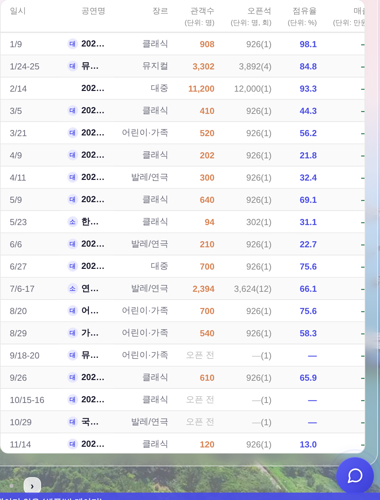
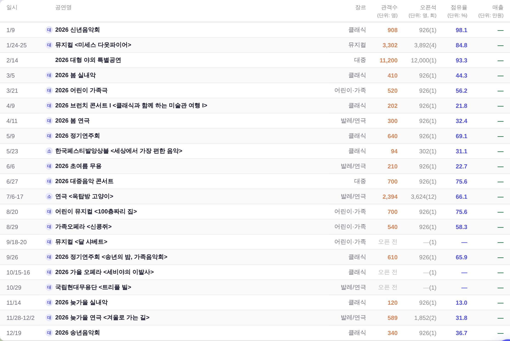
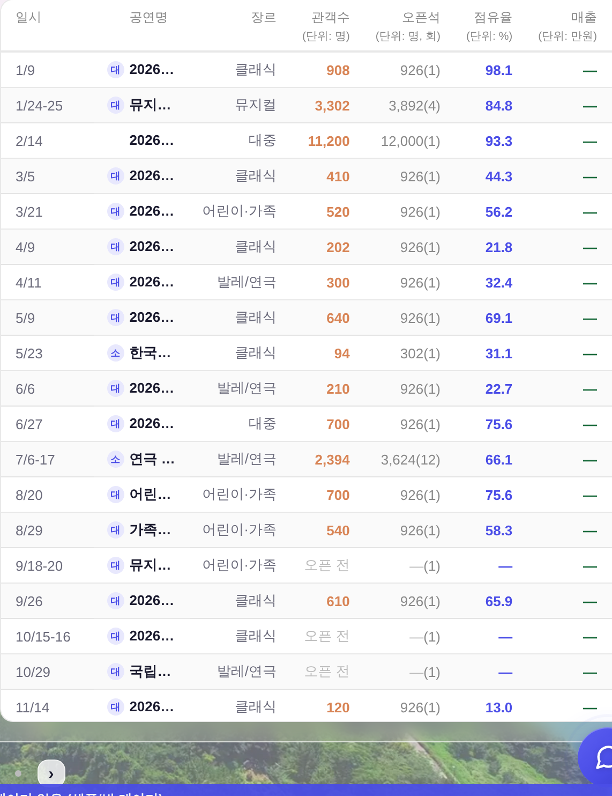
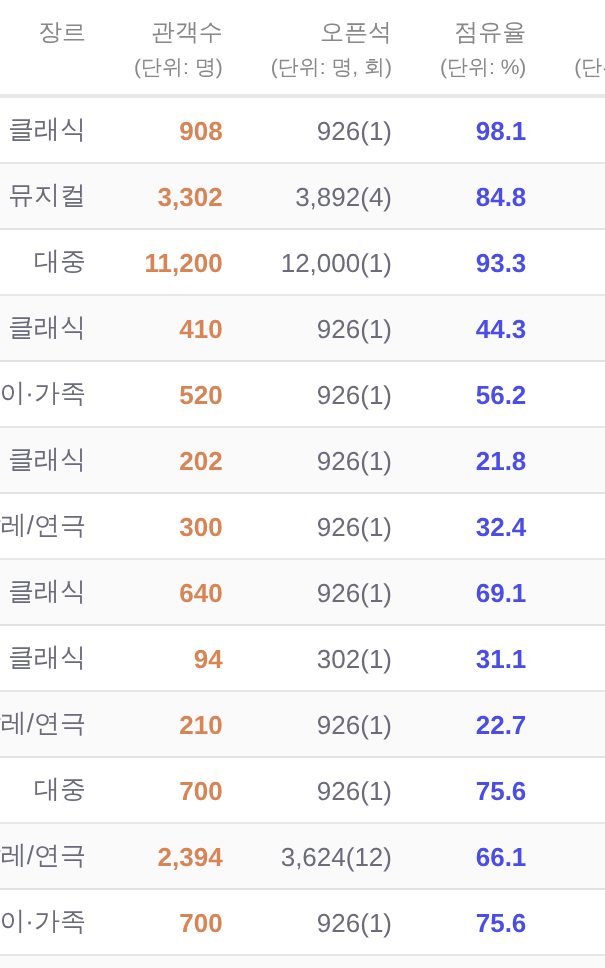

운영자 결정 대기 2건 — 전후
전부 무패치 실화면(?qa=admin 목데이터) · 실API·PII 미접촉. 코드는 아직 안 바꿨다 — 판단만 받으면 된다.
결정 ① 2열 임계 — 1201~1281px 띠에서 매출 열이 사라진다
지금은 _bizBookWide()가 1200 초과면 2열이다. 그런데 2열 한 칸의 폭이 표(571px)보다 좁아지는 구간이 1201~1281px에 남아 있고, 가로 스크롤바는 height:0이라 넘쳤다는 신호조차 없다.
1200px은 이미 1열이라 아래 「1200」 화면이 곧 임계를 1281로 올렸을 때의 모습이다.
| 폭 | 모드 | 표 폭 | 칸 폭 | 넘침 | 제목 칸 | 보이는 상태 |
|---|---|---|---|---|---|---|
| 1200 | 1열 | 1110 | 1110 | 0 | 628.5px | 전 열 정상 · 제목 전문 |
| 1201 | 2열 | 562.5 | 531 | 32px | 81px | 매출 열 소멸 · 머리글 「(단위: 만원」 글자 중간 절단 · 제목 「202…」 |
| 1240 | 2열 | 562.5 | 550 | 13px | 81px | 매출 열 잘림 |
| 1281 | 2열 | 570.5 | 571 | 0 | 89px | 넘침 해소 지점 |
1201px (현행 2열) — 매출 열이 카드 밖으로, 제목은 3글자

1200px (1열) = 임계를 1281로 올리면 1201~1281이 이 모습

1281px (2열 · 넘침 해소 지점) — 참고

주의 —
_bizBookWide()는 대시보드 전체의 2열 임계다. 올리면 1201~1281px에서 모든 면이 1열이 된다(이 표만의 값이 아니다). 그래서 코드를 안 건드리고 판단만 받는다.결정 ② 오픈석 잉크 — --dim(현행) vs --neutral-text
오픈석 열은 본문인데 머리글과 같은 잉크(--dim #888)라 데이터가 크롬과 같은 층위로 읽힌다. 회차를 이 열로 옮기면서 회차 값도 구 독립 열(--neutral-text 5.23:1)에서 이 잉크(3.54:1)로 내려왔다.
| 안 | 잉크 | 흰 행 대비 | 줄무늬 행 | AA 4.5:1 | 부작용 |
|---|---|---|---|---|---|
| 현행 | var(--dim) #888 | 3.54:1 | 3.40:1 | 미달 | 없음(이 열 원래 잉크) |
| 후보 | var(--neutral-text) #6B6B7B | 5.23:1 | 5.01:1 | 통과 | 일시·장르와 같은 급이 됨 = 회색 2종 → 1종 |
현행 —
--dim
후보 —
--neutral-text
참고 — 머리글·단위줄도
--dim 3.40:1이라 같이 미달이다. 본문만 올리면 「머리글보다 본문이 진하다」가 되어 위계는 오히려 정상이 된다. 머리글까지 손대는 건 별건(§6-9 등재).